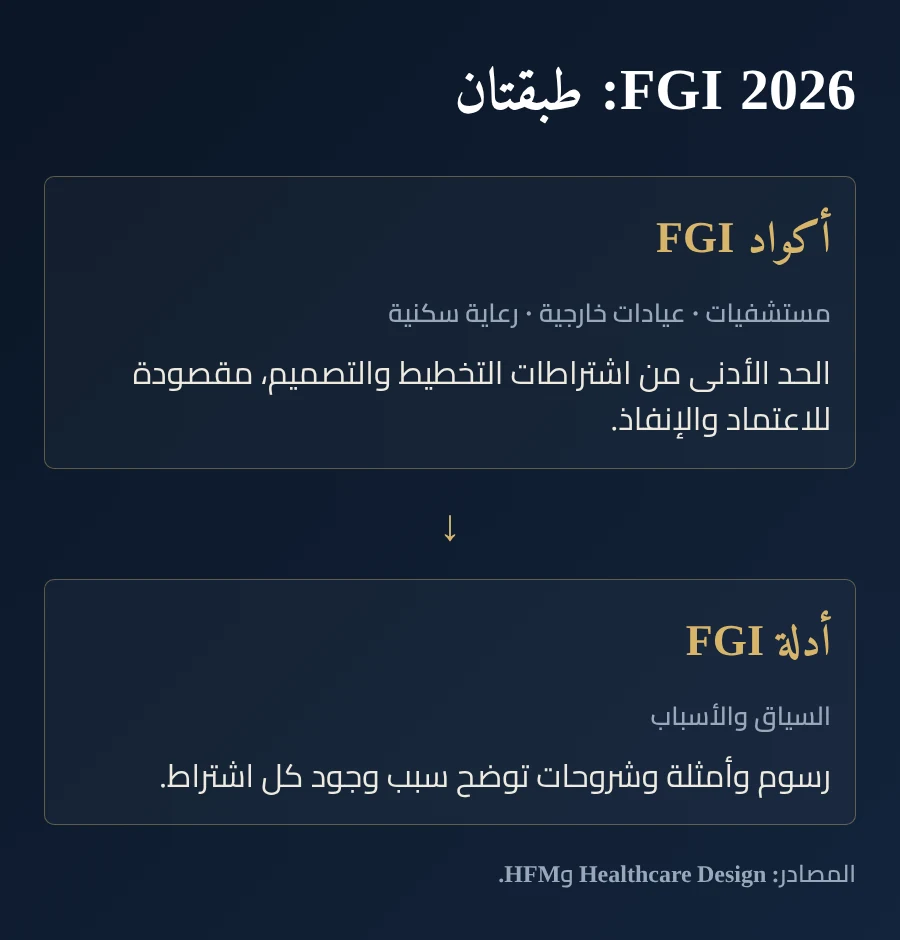

لعقود، كانت وثيقة واحدة تؤدي وظيفتين. الجهات التنظيمية تقرؤها كاشتراط، والمصممون يقرؤونها كنصيحة. وتخطو إصدارات FGI لعام 2026 خطوة واضحة نحو الفصل بين الوظيفتين.
ما الذي تغير في الهيكل
أصدر FGI (معهد إرشادات المنشآت) أكواد FGI 2026 للتخطيط والتصميم مع أدلة FGI الجديدة للتخطيط والتصميم، بحسب ما نشرته مجلة Healthcare Design في 1 سبتمبر 2026. وذكر التقرير نفسه أن الأكواد تركز الآن، لأول مرة، حصريًا على الحد الأدنى من اشتراطات التخطيط والتصميم.
ويصف مقال لـ FGI منشور في مجلة HFM التقسيم ذاته: فُصلت الاشتراطات الإلزامية عن الإرشادات التكميلية، مع ثلاثة أكواد مستقلة (المستشفيات، والعيادات الخارجية، ومنشآت الرعاية السكنية والدعم). تعرض الأكواد الحد الأدنى من الاشتراطات المقصودة للاعتماد والإنفاذ، بينما تقدم الأدلة السياق والرسوم والأمثلة وشرح الأسباب.

ما الذي لم يتغير
بحسب مقال HFM، لم تُعد صياغة الاشتراطات ضمن إعادة التنظيم، وإنما نُقلت فقط. وأعيد تنظيم اشتراطات المشروع العامة القديمة في خمسة فصول: المقدمة، والتخطيط، والتصميم، والإنشاء، والتشغيل التجريبي (Commissioning). كما روجع مسرد المصطلحات ووُحّدت الصياغة عبر الأكواد الثلاثة. وتتضمن إصدارات 2026 كذلك إصدار 2025 من المعيار ANSI/ASHRAE/ASHE 170 الخاص بتهوية المنشآت الصحية، وفق المقال نفسه.
لماذا يهم المخططين
يعيش تخطيط المعدات حيث تلتقي الاشتراطات بالغرض منها. فـ Room Data Sheets ومساحات الفراغات والمسافات الحرة واشتراطات المرافق ترجع كلها إلى ما يقوله الكود ولماذا.
- استشهد بالكود لما هو مطلوب، وبالدليل لسبب ذلك. الفصل الواضح يسهّل تبرير ملاحظات مراجعة التصميم.
- تحقق من الإصدار الذي تطبّقه جهتك. الاعتماد خطوة تنظيمية، والإصدار الجديد لا يحل تلقائيًا محل الإصدار الملزم للمشروع، فتأكد من الجهة المختصة ومن وثائق العقد.
- حدّث القوالب وقوائم المراجعة. راجع ملاحظات Room Data Sheet وقوائم المراجعة التي تذكر أرقام البنود مقابل تنظيم الفصول الجديد.
- سجّل الإصدار لكل مشروع. كتابة الإصدار في معلومات المشروع تمنع الالتباس في البرامج الطويلة.
الإتاحة
تذكر Healthcare Design أن إصدارات 2026 متاحة على FGI OneSource، وهي منصة رقمية جديدة. وتضيف HFM أن FGI تتيح نسخة من الأكواد بصيغة رقمية مجانية وقابلة للبحث.
الخلاصة
إصدار FGI 2026 هو في معظمه تغيير في طريقة تنظيم الاشتراطات وعرضها. اعتبر الأكواد هي الاشتراط، والأدلة هي الشرح، وتأكد من الإصدار المطبّق قبل تحديث معايير مشروعك.